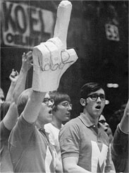
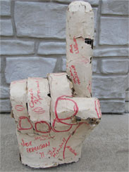

Born to bring fans the hightest quality reticulated foam hands and sports paraphernalia that the market can supply . We know what your team means to you and we aim to give you the extra 100% to cheer for your team and emerge victorious.
Our Story


Originally created by Steve Chmelar in 1971, who constructed a giant hand out of hardware cloth and paper-mache for the 1971 Iowa High School Athletic Association Boy's State Basketball Finals, Ottumwa Bulldogs vs Davenport West Falcons. A senior in high school, Steve's photo was taken by the Associated Press and published in the Des Moines Tribune and the 1971 Ottumwa High School Class Yearbook, the "Argus" in Ottumwa, Iowa.
In 1978, Geral Fauss created his own fingers modeled after Chmelar's, however Fauss made his out of foam. The fingers were created to show support for the team at the high school where he taught, to raise funds for the industrial arts club, and as a project that his industrial arts class could produce themselves. His first prototype foam finger was actually made out of plywood and had a painting of a "number one" done in the school's colors.
The success of the hand at his high school led Geral Fauss to venture into the sports merchandise business, by making fingers to sell at the 1978 Cotton Bowl game (University of Texas Vs Notre Dame), and later by founding Spirit Industries for the large scale manufacturing of foam fingers. In 1979, the first polyurethane foam version of the product was produced by Spirit Industries